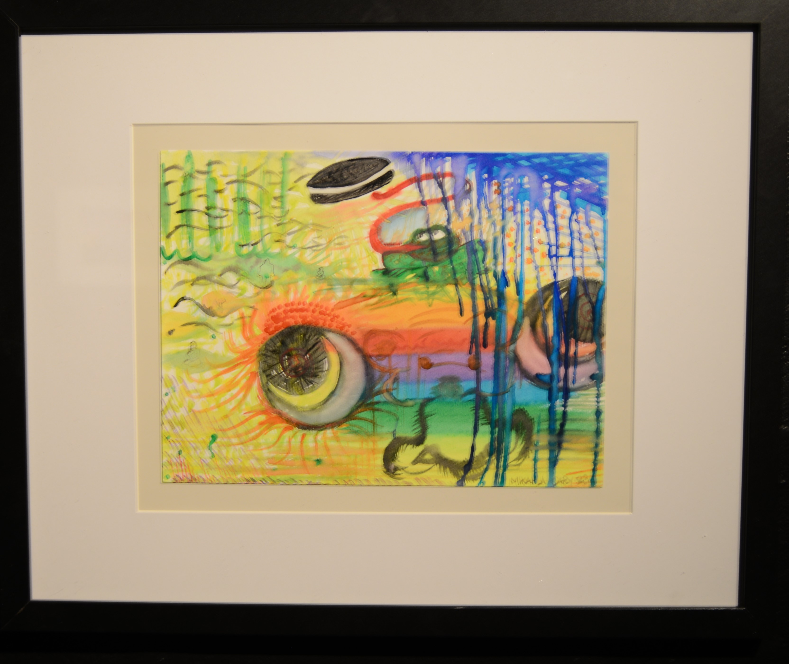

In The Black Gallery At San Jose State
Pug Eye Surrealism, Made with my kids watercolor palet
---Next page--->

This a painting I did with my kids water color set. I wanted to see if I could make somethig with watercolor. I never use watercolor as a medium, so there is a very exploratory vibe being expressed here.
Do you want to see Cthulhu? ---Next page--->
To Go Back to The Blue Vines Surrealism? Press Here.